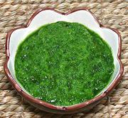

|
RecaítoPuerto Rico / California - Recaíto Básico | ||||
| Makes: Effort: Sched: DoAhead: |
2 cups ** 25 min Yes |
Recaíto is an essential flavor in many Puerto Rican recipes. I call this "Puerto Rico / California" because it is all but impossible to make it "authentically" in California (see Work-Around). | |||
|
|
6 6 3 4 8 1 |
oz oz oz cl c |
Onion Cubanelle Chili (1) Sweet Chili (2) Garlic Culantro Leaf (3) Cilantro (4) |
Make: - (25 min)
|